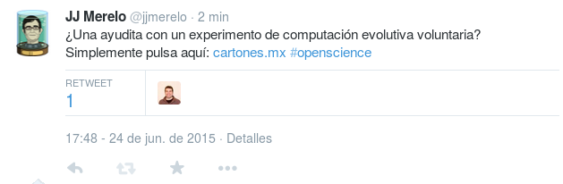
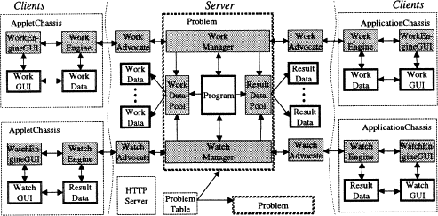
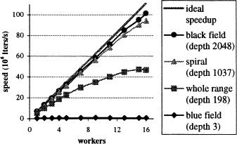

Los teléfonos son ubicuos, pero ahora vamos todavía más allá: a la Internet de las cosas. No sólo hay miles de ordenadores, sino que cada uno tiene dentro de sí otros procesadores: tarjetas de red, de video, cientos de chismes que pueden calcular (y que a menudo no lo hacen).
El primer gusano
Una novela, muy
interesante, de los años 70, "Jinete de la
onda de shock" en español, donde introduce
el concepto de tapework o gusano
que el gobierno suelta para acabar con
algo llamado Hearing aid (en
español el hablante silencioso o algo
así).
Este gusano real fue
el primero que puso en práctica la idea de
John Brunner. Y quizás también el
primero que usó capacidades
computacionales parásitas.
Insectos con unas curiosas costumbres reproductivas
La clave está en atraer a los usuarios

Igual que la hembra
se pasea entre la nube de machos, en
entornos de computación voluntaria tienes
que pasearte por las redes sociales
buscando ciclos y tuits. Algunos artículos
sobre La
biología reproductiva de los efemerópteros
Los primos de
Mersenne son de la forma
2p -1, y la forma de calcularlos
es factorizando con fuerza bruta. En
noviembre de 2014 se encontró el número
44 , usando el programa Prime95 ,
que se llama así por el año en el que se
creó. Va ya por la versión 28.
Calculado usando un script
en R . Donde se ve la clásica "ley de
potencias", aunque no es exactamente una
así...
¿Qué pasó en el año
96-98 para que empezaran a surgir este
tipo de proyectos? Claramente, existía
ese excedente de recursos. Y ya llevaba
4-5 años la web funcionando, y la gente
empezaba a tener en casa ordenadores
conectados de forma
permanente. Curiosamente, el Napster
surgió un año después, en 1999.
La primera mensajería instantánea, ICQ, surge también en 1996. Una
mensajería instantánea necesita conexión
permanente, porque usa un propio
protocolo de presencia y además, si no
está el otro ahí, ¿de qué sirve la
mensajería?
Javascript fue
también introducido, como un lenguaje de
scripting para el navegador, en 1996, tras
la introducción del navegador en
1994. Pero en realidad, es bastante más
El lenguaje ensamblador de la
web Si el mundo es mi
computadora...
JavaScript es su ensamblador
I Love You
Tiene varios
puntos interesantes el I Love
You. Primero, usó ingeniería social
para aumentar su difusión. ¿Quién no
se puede resistir a abrir una carta
de amor de una desconocida, o, mejor
aún, de una conocida? Segundo, fue
el virus que llegó a alcanzar un
número mayor de ordenadores a
nivel mundial. Tercero, usaba la
máquina virtual de Visual Basic de
Windows, un host
bastante universal. Con eso, abría
las puertas para computación
parásita más avanzada. Love
you fue un virus del milenio
Será casualidad,
pero también desde Filipinas y con mucha
mejor intención llega el marco Bayanihan
para computación distribuida en el
navegador usando applets , es
decir, la máquina virtual java. Bayanihan
es una costumbre filipina que consiste en
ayudar a mudarse (dar capacidad
computacional de lomos) a alguien cargando
su casa, literalmente, a cuestas. Vamos,
como los costaleros del Gran Poder, pero
haciendo algo útil
El navegador es el nodo

Luis F.G. Sarmenta, Satoshi Hirano, Bayanihan: building and studying web-based volunteer computing systems using Java, Future Generation Computer Systems, Volume 15, Issues 5–6, October 1999, Pages 675-686
Y el escalado es evidente

También del
artículo original, del año 1997.
El mundo es mi computadora
Computación efímera, voluntaria e involuntaria
Por JJ Merelo / @jjmerelo


{kind=link}